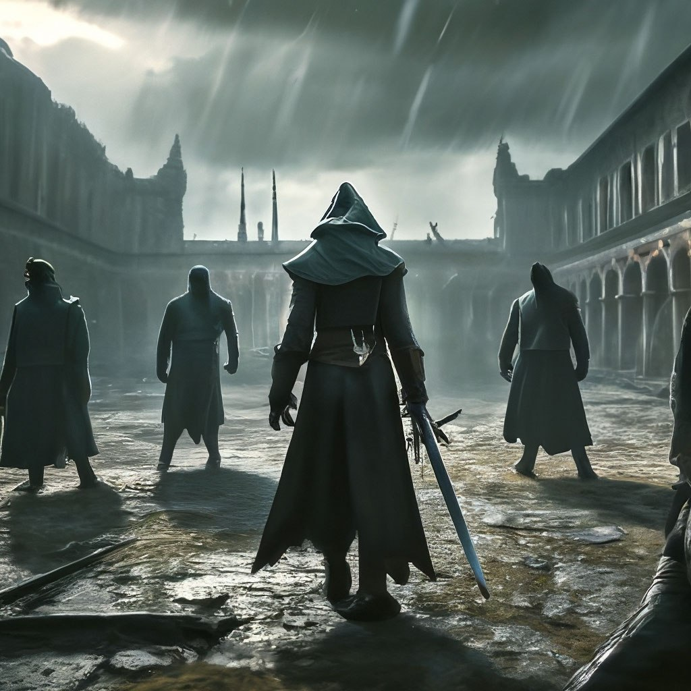

Появление
История Ордена теней, или теневиков, началась практически сразу после конца Тёмных лет. Именно тогда человек, которого ныне знают как Магистра, начал собирать одарённых людей и обучать их магии теней, секреты которой практически утрачены. Начал он с малого - нашел базу. Полуразрушенная крепость, затерянная в разросшихся за время Тёмных лет лесах, стала идеальным убежищем.
Задача у них была довольно простая - бороться со злом, не абстрактным, а вполне реальным - сначала вирус, потом появление магии, превратили некоторых животных в монстров, которыми так любили пугать людей средневековые писатели. Но, как показала практика, их фантазия была довольно скудна.
Ранние годы
Говорят, где-то в далёких от цивилизации поселках и деревнях, всё ещё есть люди, слышавшие о том, что теневики всегда ходят втроём: двое с холодным оружием, в основном двуручным и колюще-режущим, каким удобно рубить мясо, но не доспехи, и третий, который стоял в сторонке и призывал из тени монстров, которые порой были страшнее своих противников.
Мзду теневики брали небольшую, но от всякой суммы требовали половину вперед, так как очень и очень многие были щедры лишь когда им угрожала опасность. Как только теневики расправлялись с угрозой, страх уступал место жадности. Потому были случаи, когда особо прижимыстых господ оставляли тварям на растерзание, а после, расправившись с врагами, обирали тела. К счастью, подобные случаи были довольно редки. С путников, и детей, попавших в беду, оплату не требовали, но часто спасенные сами стремились отблагодарить теневиков либо монетой, либо частью товара, либо какой-нибудь услугой
Война с Черными Легионами
Теневики не стремились участвовать в политических распрях и войнах, их волновали другие дела. Но однажды они всё же были вынуждены пойти тропой войны.
К этому времени у них было гораздо больше одной крепости. Непрекращающиеся войны всех со всеми заставляли людей строить укрепленные форты и замки, а после разрушать их. На них никто, как правило, не претендовал, и при определенных условиях там селились теневики. Они латали дыры в стенах и крыщах, превращали дворы в плацы и огороды, узкие комнаты и коридоры - в место, куда хочется возвращаться, и где можно переждать суровую зиму.
Пока некогда богатую Европу трясло от войн и катаклизмов, Африка довольно просто пережила Тёмные годы - странам третьего мира было особо нечего терять, так что испытания скорее сплотили их заставив встать на путь прогресса. Арабский мир снова начал блистать умами, поплыли и пошли караваны с товарами. Но были и те, кто хотели пощупать Европу за карман, ожидая найти там золото и бриллианты.
Темнокожие воины, одетые в броню из темной кожи, вооруженные квадратными щитами и длинными копьями высаживались на берега Италии, Франции, Испании грабили и жгли всё, что видели, а в бою, по дисциплине и слаженности действий, давали фору Римским легионерам.
Продвигаясь на север Черные наткнулись на крепость Темных. Не зная ничего о теневиках, они предложили им сдаться на милость победителей. Его предложение было отвергнуто, но гарнизон сумел затянуть переговоры до конца дня. К этому моменту, воспользовавшись магией, в крепость прибыли подкрепления во главе с Магистром. На закате состоялась битва, в результате которой Черный легион был вырезан подчистую.
Поздний период
Слухи о резне Черных с Темными породили первые ростки страха перед теневиками. Слишком велика оказалась их сила. Тем не менее теневики продолжили служить человечеству. В основном по одному, они бродили по миру, давая бой фантастическим тварям, расплодившимся как грибы после дождя культам, спасая людей, привлекая все больше внимания к себе.
Вооружались они саблями, топорами, странным оружием, которое они называли "даодао", реже пользовались кинжалами, мачете и посохами. Носили они черные или темно-синие плащи с капюшонами, плотные кожаные куртки, плотные штаны и ботинки с голенищами по середину голени. Дополняла образ маска и дорожная сумка через плечо.
Конец Ордена
Смерть всегда приходит неожиданно, и Орден не стал исключением. Ему объявила войну Десятка - десять сильнейших магов мира. Но это лишь внешняя сторона. На самом деле Десятка давно была поглощена сектой. Они долго и тщательно планировала атаку, вычисляла убежища, расчитывала силы. В решающий момент она атаковала, используя ядовитый газ, происхождение которого невдомо никому. Выжил Магистр - он смог пережить атаку и перебить команду зачистки.
Кроме него газ пережили двое - один никогда не снимал маску, ибо не переносил пыль дорог и цветов, а второй феноменально везуч. После атаки они собрались вместе, дабы вновь спасти мир от очередной секты...